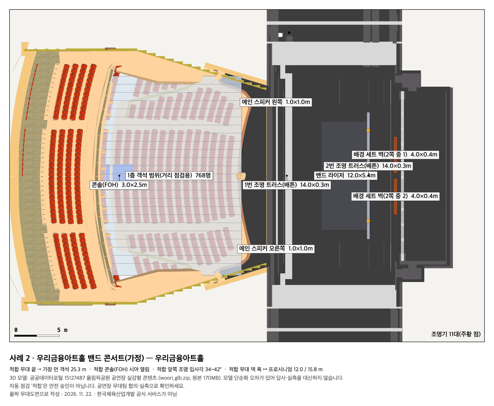

[서식 제7호] 초안
| 공 연 명 | 사례 2 · 우리금융아트홀 밴드 콘서트(가정) |
|---|---|
| 공연장소 | 올림픽공원 우리금융아트홀 |
| 공연일시 | 2027년 3월 20일(토) 19:00, 1회(가정) |
| 공연장비 반입여부 (내역 별첨) | ■ 있음 □ 없음 — 별첨 1 장비 목록 20건 |
| 무대시설 작업일정 | 3/19 09:00~22:00 반입·설치(가정) |
| 출연자 및 외부스텝 | 출연자 5 명 · 외부스텝 12 명 |
| 무대연습 일정 | 3/20 10:00~16:00(가정) |
| 무대철수 작업일정 | 3/20 21:30~24:00(가정) |
위 공연을 위하여 올림픽시설물 대관운영규정 및 안전수칙을 성실히 준수하겠습니다. (단체명·주소·전화·대표자 서명은 제출 시 직접 기입)

| 구분 | 이름 | 가로(m) | 세로(m) | 높이(m) | 설치 높이(m) | X(m) | Z(m) | 회전(°) | 무게(kg) | 수용(명) |
|---|---|---|---|---|---|---|---|---|---|---|
| 무대 덱 | 밴드 라이저 | 12 | 5.4 | 0.6 | - | -8.5 | -3.7 | 90 | - | - |
| 트러스 | 1번 조명 트러스(배튼) | 14 | 0.3 | 0.3 | 8 | -15 | -3.7 | 90 | 168 | - |
| 트러스 | 2번 조명 트러스(배튼) | 14 | 0.3 | 0.3 | 8.5 | -6 | -3.7 | 90 | 168 | - |
| 조명기 | 1번 조명 1 | 0.4 | 0.4 | 0.5 | 8 | -15 | -9.7 | 0 | 32 | - |
| 조명기 | 1번 조명 2 | 0.4 | 0.4 | 0.5 | 8 | -15 | -7.7 | 0 | 32 | - |
| 조명기 | 1번 조명 3 | 0.4 | 0.4 | 0.5 | 8 | -15 | -5.7 | 0 | 32 | - |
| 조명기 | 1번 조명 4 | 0.4 | 0.4 | 0.5 | 8 | -15 | -3.7 | 0 | 32 | - |
| 조명기 | 1번 조명 5 | 0.4 | 0.4 | 0.5 | 8 | -15 | -1.7 | 0 | 32 | - |
| 조명기 | 1번 조명 6 | 0.4 | 0.4 | 0.5 | 8 | -15 | 0.3 | 0 | 32 | - |
| 조명기 | 1번 조명 7 | 0.4 | 0.4 | 0.5 | 8 | -15 | 2.3 | 0 | 32 | - |
| 조명기 | 2번 조명 1 | 0.4 | 0.4 | 0.5 | 8.5 | -6 | -8.7 | 0 | 32 | - |
| 조명기 | 2번 조명 2 | 0.4 | 0.4 | 0.5 | 8.5 | -6 | -5.7 | 0 | 32 | - |
| 조명기 | 2번 조명 3 | 0.4 | 0.4 | 0.5 | 8.5 | -6 | -1.7 | 0 | 32 | - |
| 조명기 | 2번 조명 4 | 0.4 | 0.4 | 0.5 | 8.5 | -6 | 1.3 | 0 | 32 | - |
| 스피커 | 메인 스피커 왼쪽 | 1 | 1 | 2.8 | 0 | -16.2 | -11.8 | 0 | 250 | - |
| 스피커 | 메인 스피커 오른쪽 | 1 | 1 | 2.8 | 0 | -16.2 | 4.4 | 0 | 250 | - |
| 세트(장치) | 배경 세트 벽(2쪽 중 1) | 4 | 0.4 | 4.2 | - | -3 | -6 | 90 | - | - |
| 세트(장치) | 배경 세트 벽(2쪽 중 2) | 4 | 0.4 | 4.2 | - | -3 | -1.4 | 90 | - | - |
| 객석 블록 | 1층 객석 범위(거리 점검용) | 16 | 22 | 0.05 | - | -28 | -3.7 | 0 | - | 768 |
| 음향·조명 콘솔 | 콘솔(FOH) | 3 | 2.5 | 1 | - | -33.5 | -3.7 | 0 | - | - |
| 공연일과 겹치는 등록 행사 | 참고 목록에 없음 2027-03-20에 이 공연장으로 등록된 공개 행사가 없습니다. 대관할 수 있다는 뜻은 아닙니다(비공개 대관·내부 일정은 목록에 없음). 대관 가능 여부는 기관에 문의하세요. 기준: 공개 행사 목록(공공데이터포털 15015212·3037877 연결 화면) 2,394건, 수집 2026-11-22 |
|---|---|
| 수용 인원(추정) | 참고 768명 지정석 768명 · 스탠딩 0명. 통로·시야 제한석을 빼기 전 값입니다. 기준: 지정석 0.5m×0.9m, 스탠딩 ㎡당 2명(가정) |
| 무대 끝 → 가장 먼 객석 | 적합 25.3 m 메인 스피커 한 조로 덮을 수 있는 거리 안입니다. 기준: 60m 이상이면 딜레이 스피커 검토(업계 관행, 참고) |
| 콘솔(FOH) 시야 | 적합 열림 무대 앞에서 약 22.3m, 무대 중앙까지 가리는 것이 없습니다. 기준: 콘솔 앞 눈높이에서 무대 위 1.7m 지점까지 직선(3D 모델 구조물 포함) |
| 역광 조명 | 참고 4대 무대 중앙보다 뒤(객석 반대쪽)에 있어 역광으로 분류했습니다. 입사각 점검에서 뺍니다. |
| 앞쪽 조명 입사각 | 적합 34~42° 앞쪽 조명 7대 모두 권장 범위 안입니다. 기준: 무대 중앙 얼굴 높이 기준 30~60°(맥캔들리스 45° 관행, 참고) |
| 무대 덱 폭 ↔ 프로시니엄 | 적합 12.0 / 15.8 m 프로시니엄 안에 들어옵니다. 기준: 기관 공개 제원: 프로시니엄 폭 15.8m, 높이 8.7m |
| 보유 덧마루로 덮을 수 있나 | 적합 64.8 / 68.0 ㎡ 공연장 보유 덧마루 면적 안입니다(면적 기준, 높이·배치는 따로 확인). 기준: 기관 공개 제원: 덧마루 1200×1800 18개(38.9㎡) + 900×1800 18개(29.2㎡) = 68.0㎡ |
| 세트 반입구 통과 | 적합 2개 통과 가장 작은 두 변이 반입구 안에 들어옵니다(눕혀서 반입 가정). 기준: 기관 공개 제원: 외부 장치 반입구 폭 4.3m × 높이 2.9m |
| 1번 조명 트러스(배튼) 배튼 하중 | 적합 392 / 750 kg 7대 조명 + 트러스 자중. 배튼 허용 하중 안입니다. 기준: 기관 공개 제원: 세트 배튼 29개, 허용 하중 750kg, 길이 20m. 트러스 자중 12kg/m(가정) |
| 2번 조명 트러스(배튼) 배튼 하중 | 적합 296 / 750 kg 4대 조명 + 트러스 자중. 배튼 허용 하중 안입니다. 기준: 기관 공개 제원: 세트 배튼 29개, 허용 하중 750kg, 길이 20m. 트러스 자중 12kg/m(가정) |
| 아직 점검할 수 없는 것 | 참고 배튼별 위치(무대 앞에서 거리), 전기 용량(무대·객석 분전반), 객석 단차·좌석 좌표. 기관 공개 자료에 없는 항목입니다. |
자동 점검의 '적합'은 안전 승인이 아닙니다. 기관 공개 제원과 비교한 항목, 3D 모델로 계산한 항목, 업계 관행·가정을 쓴 항목을 '기준'에 구분해 적었습니다. 이 문서는 올팍 무대도면(공공데이터 활용)으로 만든 초안이며 한국체육산업개발 공식 서식 파일을 대신하지 않습니다. 3D 모델은 단순화 오차가 있어 무대 스태프 회의와 실측으로 확인해야 합니다.